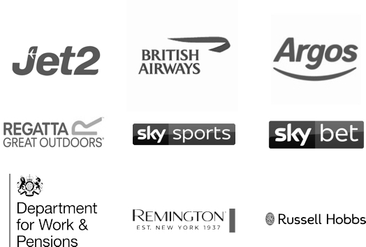

I am a Senior interaction designer, UI developer, and team player. Working alongside my heroes at Department for Work and Pensions, helping everyone have an easier life by providing a simple way of using online and offline services.
I mentor, write, talk and make terrible jokes.
In previous roles, I have worked with:
In previous roles, I have: